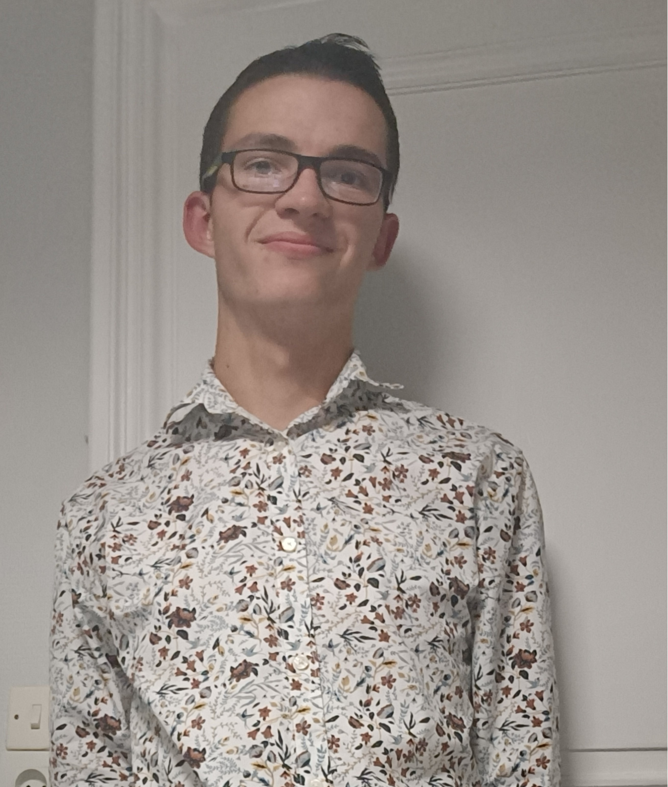

BIENVENUE SUR MON E-PORTFOLIO

Nom : Boyer
Prénom : Maxence
Groupe: B2
Je m'appelle Maxence Boyer, j'habite en Haute-Loire à Sainte-Sigolène et je suis actuellement en première année de Réseaux et Télécommunications à l'IUT de Roanne. Passionné par l'informatique, je suis ravi de vous présenter mon parcours.